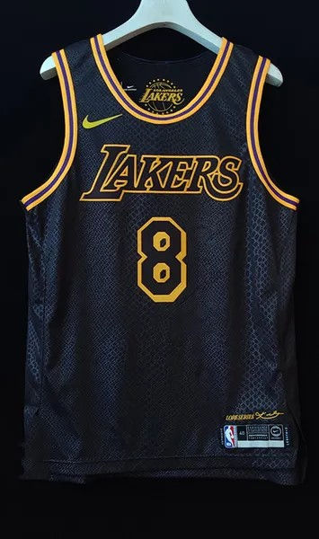
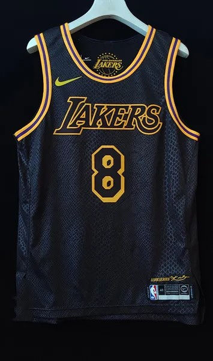
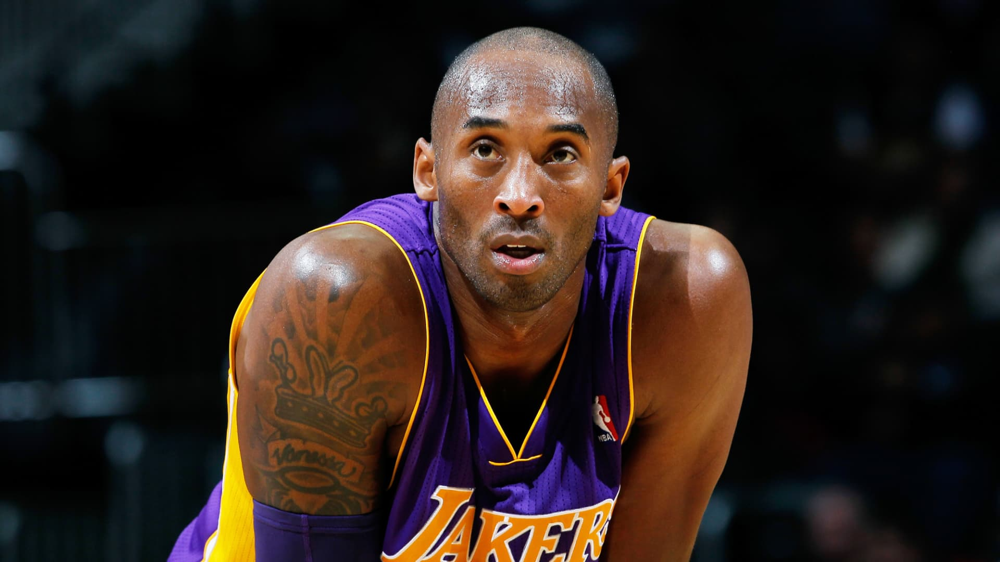
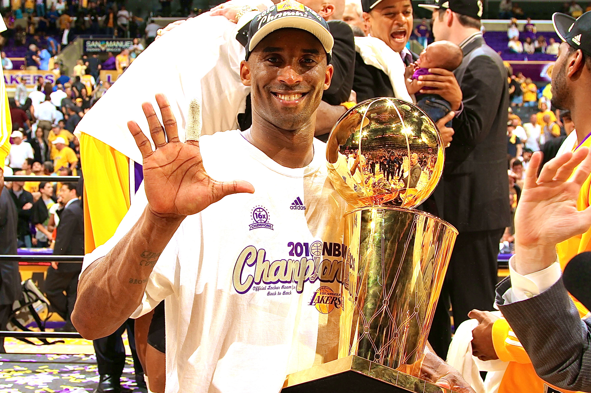
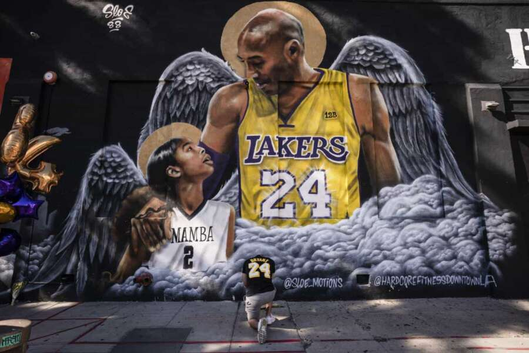
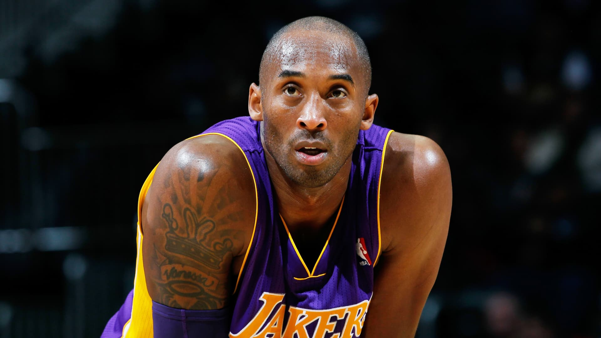
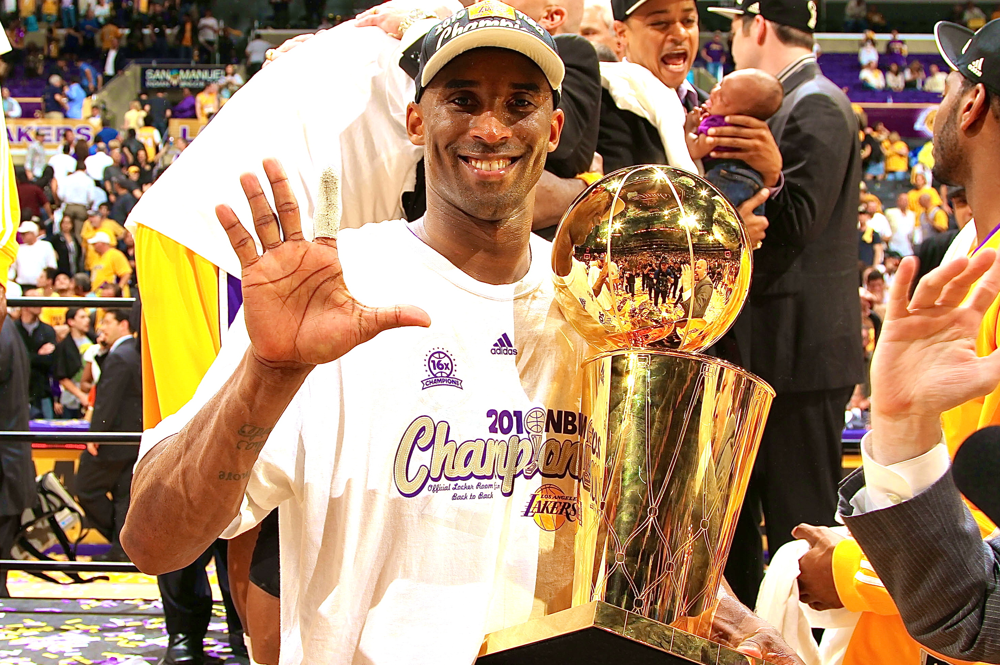
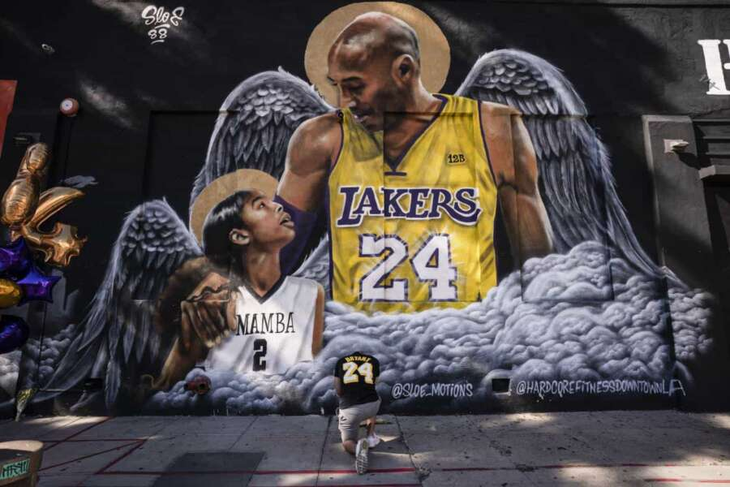

Kobe Bryant
1978-2020
#24 #8
"The moment you give up is the moment you let someone else win"
"Hard work outweighs talent-everytime"
"The biggest dreams aren't fueled by belief. They're fueled by doubt."
 

Black Mamba Legacy
 





- Aug. 23, 1978: Born in Philadelphia.
- June 1996: Selected 13th overall in the NBA draft by the Charlotte Hornets out of Lower Merion High in Pennsylvania. Bryant was quickly traded to the Los Angeles Lakers in exchange for center Vlade Divac.
- 1997: In his rookie season, Bryant won the Slam Dunk Contest at NBA All-Star Weekend, becoming the youngest player in NBA history to ever do so. In Game 5 of the second round of the playoffs against the Utah Jazz, he infamously shot four airballs as the Lakers were eliminated. He was named to the All-Rookie second team after his first campaign.
- 1998: Made first of his 18 All-Star appearances, which included 17 straight from 2000-16. The Lakers lost to the Jazz in the Western Conference Finals that season.
- 2000: Won his first of five NBA championships (2000-02, 2009-10). That season, he also made the first of his nine All-NBA Defensive first teams.
- 2002: Named to first of 11 All-NBA first teams, which is tied for the most in NBA history with Karl Malone and LeBron James.
- July 2003: Arrested in Eagle, Colorado, as part of an investigation of a sexual assault complaint filed by a 19-year-old hotel employee. The charges were dropped 14 months later and after his accuser filed a civil suit, they reached a settlement.
- Jan. 22, 2006: Scored 81 points in a game against the Toronto Raptors, which is the second-most points scored in a game in NBA history.
- 2008: Won his lone NBA MVP award.
- 2009: Won his first NBA Finals MVP award before winning it again in 2010. The Lakers beat the Jazz in the playoffs in both seasons.
- April 13, 2016: In his final NBA game, Bryant put forth a vintage performance, scoring 60 points against the Jazz in a 101-96 Lakers win, becoming the oldest player in NBA history to score 60 in a game. That is also the most points any NBA player has ever scored' in his final game. He finished his career with 33,643 points, which was third in NBA history until James surpassed the mark on Jan. 25, 2020. He had played his final game in Salt Lake City a few weeks prior, where the Jazz played a tribute video to honor him.
- Jan. 26, 2020: Died in a helicopter crash along with eight others, including his daughter Gianna, in California at the age of 41.